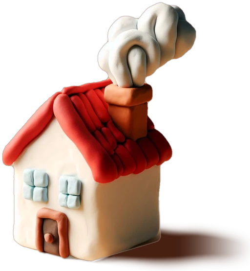

Prototips per opinar
Hola! Ens ajudes a fer-la a la teva mida?
Són maquetes de com podria ser l'eina per portar les vacances i els AP de les dues cases, en lloc del full de càlcul. Les dades són inventades: pots tocar-ho tot, no s'esborra res de debò.

Què hi ha per mirar
- 1. SaldosLlest per provar Quants dies de vacances i hores d'AP li queden a cada persona, i apuntar-ne de nous. Substitueix la pestanya V i APS.
-
2. Vacances 2027Aviat A final d'any: apuntar el que demana cada persona, veure les setmanes amb massa gent fora, ajustar i deixar l'any tancat.
-
3. El mesAviat El calendari del mes de cada casa: qui fa vacances, AP o està de baixa cada dia.
Com ens ajudes
- Fes servir cada prototip com si fos el teu dia a dia: apunta unes vacances, un AP…
- A cada pàgina hi ha un botó "Què en penses?" amb unes quantes preguntes.
- El més important: què et faria estalviar temps i què hi sobra.